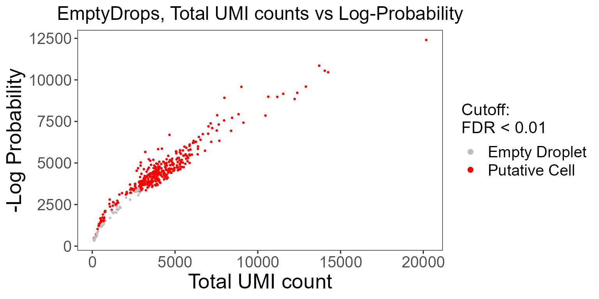
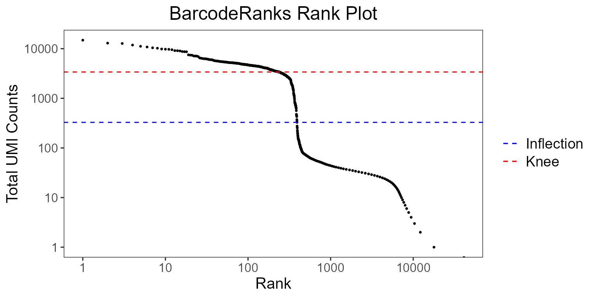

Introduction
Performing comprehensive quality control (QC) is necessary to remove poor quality cells for downstream analysis of single-cell RNA sequencing (scRNA-seq) data. Within droplet-based scRNA-seq data, droplets containing cells must be differentiated from empty droplets. Therefore, assessment of the data is required, for which various QC algorithms have been developed. In singleCellTK, we have written convenience functions for several of these tools. In this guide, we will demonstrate how to use these functions to perform quality control on unfiltered, droplet-level data.
The package can be loaded using the library command.
Running quality control of droplet raw count data with singleCellTK
Load PBMC4k data from 10X
singleCellTK takes in a SingleCellExperiment object from the SingleCellExperiment package. We will utilize the 10X PBMC 4K dataset as an example. For the quality control of droplet-based counts data, we will install the dataset from the 10X Genomics website using the BiocFileCache(https://www.bioconductor.org/packages/release/bioc/html/BiocFileCache.html) package.
# Install BiocFileCache if is it not already
if (!requireNamespace("BiocFileCache", quietly = TRUE)) {
if (!requireNamespace("BiocManager", quietly = TRUE)) {
install.packages("BiocManager")
}
BiocManager::install("BiocFileCache")
}
library("BiocFileCache")
bfc <- BiocFileCache::BiocFileCache("raw_data", ask = FALSE)
raw.path <- bfcrpath(bfc, file.path(
"http://cf.10xgenomics.com/samples",
"cell-exp/2.1.0/pbmc4k/pbmc4k_raw_gene_bc_matrices.tar.gz"
))
untar(raw.path, exdir = file.path(tempdir(), "pbmc4k"))
fname <- file.path(tempdir(), "pbmc4k/raw_gene_bc_matrices/GRCh38")
pbmc4k.droplet <- DropletUtils::read10xCounts(fname, col.names = TRUE)
### change the sample column
names(colData(pbmc4k.droplet)) <- c("sample", "Barcode")
colData(pbmc4k.droplet)$sample <- rep("pbmc4k", ncol(colData(pbmc4k.droplet)))singleCellTK also supports the importing of single-cell data from the following platforms: 10X CellRanger, STARSolo, BUSTools, SEQC, DropEST, and AnnData. To load your own input data, please refer Import data into SCTK for deailed instruction.
runDropletQC
All droplet-based QC functions are able to be run under the wrapper function runDropletQC. By default all possible QC algorithms will be run.
pbmc4k.droplet <- runDropletQC(pbmc4k.droplet)## Sun Sep 26 13:41:24 2021 ... Running 'perCellQCMetrics'## Sun Sep 26 13:41:24 2021 ... Running 'emptyDrops'## Sun Sep 26 13:41:55 2021 ... Running 'barcodeRanks'If users choose to only run a specific set of algorithms, they can specify which to run with the algorithms parameter.
When quality control functions are run in singleCellTK, the output of the function is stored in the colData slot of the SingleCellExperiment object.
head(colData(pbmc4k.droplet), 5)| sample | Barcode | sum | detected | percent.top_50 | percent.top_100 | percent.top_200 | percent.top_500 | total | dropletUtils_emptyDrops_total | dropletUtils_emptyDrops_logprob | dropletUtils_emptyDrops_pvalue | dropletUtils_emptyDrops_limited | dropletUtils_emptyDrops_fdr | dropletUtils_BarcodeRank_Knee | dropletUtils_BarcodeRank_Inflection | |
|---|---|---|---|---|---|---|---|---|---|---|---|---|---|---|---|---|
| CTCTACGCATGAGCGA-1 | pbmc4k | CTCTACGCATGAGCGA-1 | 0 | 0 | NaN | NaN | NaN | NaN | 0 | 0 | NA | NA | NA | NA | 0 | 0 |
| CCGTGGATCCCTCTTT-1 | pbmc4k | CCGTGGATCCCTCTTT-1 | 1 | 1 | 100.00000 | 100 | 100 | 100 | 1 | 1 | NA | NA | NA | NA | 0 | 0 |
| TGGTTAGAGCGATTCT-1 | pbmc4k | TGGTTAGAGCGATTCT-1 | 0 | 0 | NaN | NaN | NaN | NaN | 0 | 0 | NA | NA | NA | NA | 0 | 0 |
| AGAATAGCACCCATGG-1 | pbmc4k | AGAATAGCACCCATGG-1 | 88 | 79 | 67.04545 | 100 | 100 | 100 | 88 | 88 | NA | NA | NA | NA | 0 | 0 |
| GACTGCGCATGTCCTC-1 | pbmc4k | GACTGCGCATGTCCTC-1 | 0 | 0 | NaN | NaN | NaN | NaN | 0 | 0 | NA | NA | NA | NA | 0 | 0 |
A summary of all outputs is shown below:
| QC output | Description | Methods | Package/Tool |
|---|---|---|---|
| dropletUtils_emptyDrops_total | Total counts | runEmptyDrops | DropletUtils |
| dropletUtils_emptyDrops_logprob | The log-probability of droplet being empty | runEmptyDrops | DropletUtils |
| dropletUtils_emptyDrops_pvalue | Monte Carlo p-value of droplet being empty | runEmptyDrops | DropletUtils |
| dropletUtils_emptyDrops_limited | Whether a lower p-value could be obtained by increasing niters | runEmptyDrops | DropletUtils |
| dropletUtils_emptyDrops_fdr | p-value of droplet being empty, corrected for false detection rate | runEmptyDrops | DropletUtils |
| dropletUtils_BarcodeRank_Knee | Whether total UMI count value is higher than knee point | runBarcodeRankDrops | DropletUtils |
| dropletUtils_BarcodeRank_Inflection | Whether total UMI count value is higher than inflection point | runBarcodeRankDrops | DropletUtils |
Plotting QC metrics
Upon running runDropletQC, the QC outputs will need to be plotted. For each QC method, singleCellTK contains specialized plotting functions that may be used for the generation of QC plots.
EmptyDrops
It is crucial to distinguish the data occurring from real cells and empty droplets containing ambient RNA. SCTK employs the EmptyDrops algorithm from the DropletUtils package to test for empty droplets.
The wrapper function plotEmptyDropsResults can be used to plot the results from the EmptyDrops algorithm. This will visualize the empty droplets, by plotting the total UMI counts against the log probability for each barcode.
emptyDropsResults <- plotEmptyDropsResults(
inSCE = pbmc4k.droplet,
axisLabelSize = 20,
sample = NULL,
fdrCutoff = 0.01,
dotSize = 0.5,
defaultTheme = TRUE
)
emptyDropsResults$scatterEmptyDrops
Data points are colored by FDR values, where we see a small portion of the dataset contains barcodes that do not meet the threshold.
BarcodeRanks
BarcodeRanks from the DropletUtils package computes barcode rank statistics and identifies the knee and inflection points on the total count curve. The knee and inflection points on the curve represent the difference between empty droplets and cell-containing droplets with much more RNA. The lower parameter is again the lower bound of the total UMI count, in which all barcodes below the lower bound are assumed to be empty droplets.
plotBarcodeRankScatter(
inSCE = pbmc4k.droplet,
title = "BarcodeRanks Rank Plot",
legendSize = 14
)
The total UMI count of each barcode is plotted against its rank, where we see a steep dropoff of UMI counts around the inflection point, where we see a separation between cell containing and empty droplets.
Filtering the dataset
SingleCellExperiment objects can be subset by its colData using subsetSCECols. The colData parameter takes in an expression in character vector form which will be used to identify a subset of columns using variables found in the colData of the SingleCellExperiment object. For example, if x is a numeric vector in colData, then “x < 5” will return all columns with x less than 5. The index parameter takes in a vector of indices which should be kept, while bool takes in a vector of TRUE or FALSE which should be the same length as the number of columns in the SingleCellExperiment object.
#Before filtering:
dim(pbmc4k.droplet)## [1] 33694 60000
pbmc4k.droplet <- subsetSCECols(pbmc4k.droplet, colData = 'dropletUtils_BarcodeRank_Inflection == 1')
pbmc4k.droplet <- subsetSCECols(pbmc4k.droplet, colData = '!is.na(pbmc4k.droplet$dropletUtils_emptyDrops_fdr)')
pbmc4k.droplet <- subsetSCECols(pbmc4k.droplet, colData = 'pbmc4k.droplet$dropletUtils_emptyDrops_fdr < 0.01')
#After filtering:
dim(pbmc4k.droplet)## [1] 33694 334We can compare the average total UMI counts per cell before and after cell filtration:
p1 <- plotSCEViolinColData(pbmc4k.droplet.prefilt, coldata = "sum", summary = "mean", title = "Pre-filter", ylab = "Total counts")
p2 <- plotSCEViolinColData(pbmc4k.droplet, coldata = "sum", summary = "mean", title = "Post-filter", ylab = "Total counts")
plot(cowplot::plot_grid(p1, p2, ncol = 2))
For additional cell-filtered quality control with singleCellTK, please refer to “Running quality control of cell-filtered single cell data with singleCellTK”.
Running individual QC methods
Instead of running all quality control methods on the dataset at once, users may elect to execute QC methods individually. The parameters as well as the outputs to individual QC functions are described in detail as follows:
runEmptyDrops
The wrapper function runEmptyDrops can be used to separately run the EmptyDrops algorithm on its own.
In runEmptyDrops, the lower parameter is the lower bound of the total UMI count, in which all barcodes below the lower bound are assumed to be empty droplets. The niters parameter is the number of iterations the function will run for the calculation. testAmbient indicates whether results should be returned for barcodes that have a total UMI count below what is specified in lower.
pbmc4k.droplet <- runEmptyDrops(
inSCE = pbmc4k.droplet,
useAssay = "counts",
lower = 100,
niters = 10000
)runBarcodeRankDrops
The wrapper function runBarcodeRankDrops can be used to separately run the BarcodeRanks algorithm on its own.
The lower parameter is again the lower bound of the total UMI count, in which all barcodes below the lower bound are assumed to be empty droplets.
pbmc4k.droplet <- runBarcodeRankDrops(
inSCE = pbmc4k.droplet,
useAssay = "counts",
fitBounds = NULL, df = 20
)Session Information
## R version 4.0.4 (2021-02-15)
## Platform: x86_64-w64-mingw32/x64 (64-bit)
## Running under: Windows 10 x64 (build 19042)
##
## Matrix products: default
##
## locale:
## [1] LC_COLLATE=Chinese (Simplified)_China.936
## [2] LC_CTYPE=Chinese (Simplified)_China.936
## [3] LC_MONETARY=Chinese (Simplified)_China.936
## [4] LC_NUMERIC=C
## [5] LC_TIME=Chinese (Simplified)_China.936
##
## attached base packages:
## [1] parallel stats4 stats graphics grDevices utils datasets
## [8] methods base
##
## other attached packages:
## [1] BiocFileCache_1.14.0 dbplyr_2.1.0
## [3] dplyr_1.0.5 singleCellTK_2.2.1
## [5] DelayedArray_0.16.2 Matrix_1.3-3
## [7] SingleCellExperiment_1.12.0 SummarizedExperiment_1.20.0
## [9] Biobase_2.50.0 GenomicRanges_1.42.0
## [11] GenomeInfoDb_1.26.2 IRanges_2.24.1
## [13] S4Vectors_0.28.1 BiocGenerics_0.36.0
## [15] MatrixGenerics_1.2.1 matrixStats_0.58.0
##
## loaded via a namespace (and not attached):
## [1] ggbeeswarm_0.6.0 colorspace_2.0-0
## [3] ellipsis_0.3.1 rprojroot_2.0.2
## [5] GSVAdata_1.26.0 scuttle_1.0.4
## [7] XVector_0.30.0 BiocNeighbors_1.8.2
## [9] fs_1.5.0 rstudioapi_0.13
## [11] farver_2.1.0 bit64_4.0.5
## [13] fansi_0.4.2 xml2_1.3.2
## [15] R.methodsS3_1.8.1 sparseMatrixStats_1.2.1
## [17] cachem_1.0.4 knitr_1.31
## [19] scater_1.18.6 jsonlite_1.7.2
## [21] R.oo_1.24.0 HDF5Array_1.18.1
## [23] compiler_4.0.4 httr_1.4.2
## [25] dqrng_0.2.1 assertthat_0.2.1
## [27] fastmap_1.1.0 limma_3.46.0
## [29] BiocSingular_1.6.0 htmltools_0.5.1.1
## [31] tools_4.0.4 rsvd_1.0.3
## [33] gtable_0.3.0 glue_1.4.2
## [35] GenomeInfoDbData_1.2.4 rappdirs_0.3.3
## [37] Rcpp_1.0.6 jquerylib_0.1.3
## [39] pkgdown_1.6.1 vctrs_0.3.6
## [41] rhdf5filters_1.2.0 svglite_2.0.0
## [43] DelayedMatrixStats_1.12.3 xfun_0.21
## [45] stringr_1.4.0 beachmat_2.6.4
## [47] rvest_0.3.6 lifecycle_1.0.0
## [49] irlba_2.3.3 gtools_3.8.2
## [51] edgeR_3.32.1 zlibbioc_1.36.0
## [53] scales_1.1.1 ragg_1.1.1
## [55] rhdf5_2.34.0 yaml_2.2.1
## [57] curl_4.3 memoise_2.0.0
## [59] reticulate_1.18 gridExtra_2.3
## [61] ggplot2_3.3.3 sass_0.3.1
## [63] stringi_1.5.3 RSQLite_2.2.3
## [65] highr_0.8 desc_1.3.0
## [67] BiocParallel_1.24.1 rlang_0.4.10
## [69] pkgconfig_2.0.3 systemfonts_1.0.1
## [71] bitops_1.0-6 evaluate_0.14
## [73] lattice_0.20-41 purrr_0.3.4
## [75] Rhdf5lib_1.12.1 labeling_0.4.2
## [77] cowplot_1.1.1 bit_4.0.4
## [79] tidyselect_1.1.0 magrittr_2.0.1
## [81] R6_2.5.0 generics_0.1.0
## [83] fishpond_1.6.0 DBI_1.1.1
## [85] pillar_1.5.1 withr_2.4.1
## [87] RCurl_1.98-1.2 tibble_3.1.0
## [89] crayon_1.4.1 DropletUtils_1.10.3
## [91] utf8_1.1.4 rmarkdown_2.7
## [93] viridis_0.5.1 locfit_1.5-9.4
## [95] grid_4.0.4 blob_1.2.1
## [97] webshot_0.5.2 digest_0.6.27
## [99] R.utils_2.10.1 textshaping_0.3.1
## [101] munsell_0.5.0 beeswarm_0.3.1
## [103] viridisLite_0.3.0 kableExtra_1.3.4
## [105] vipor_0.4.5 bslib_0.2.4